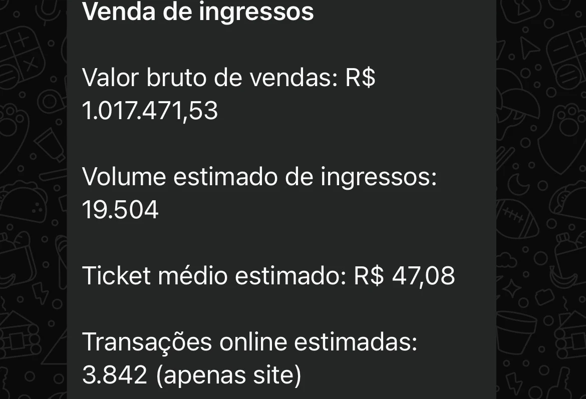
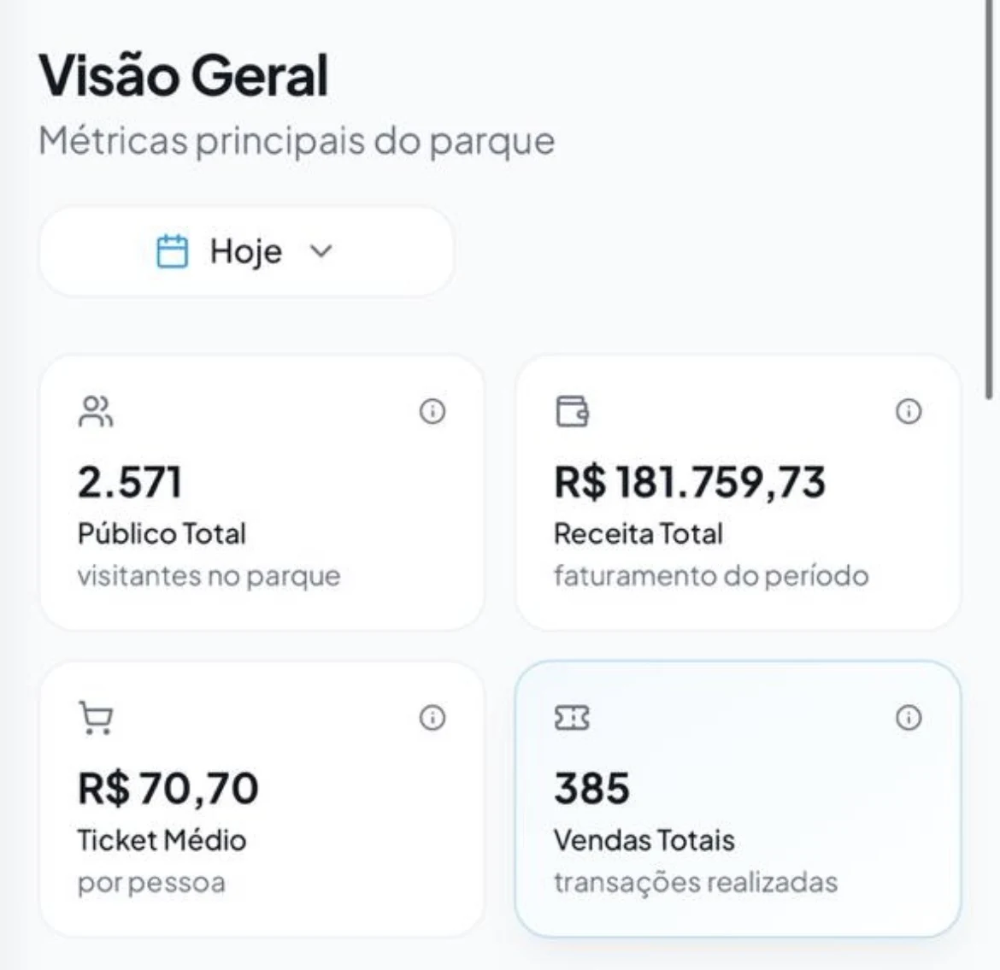
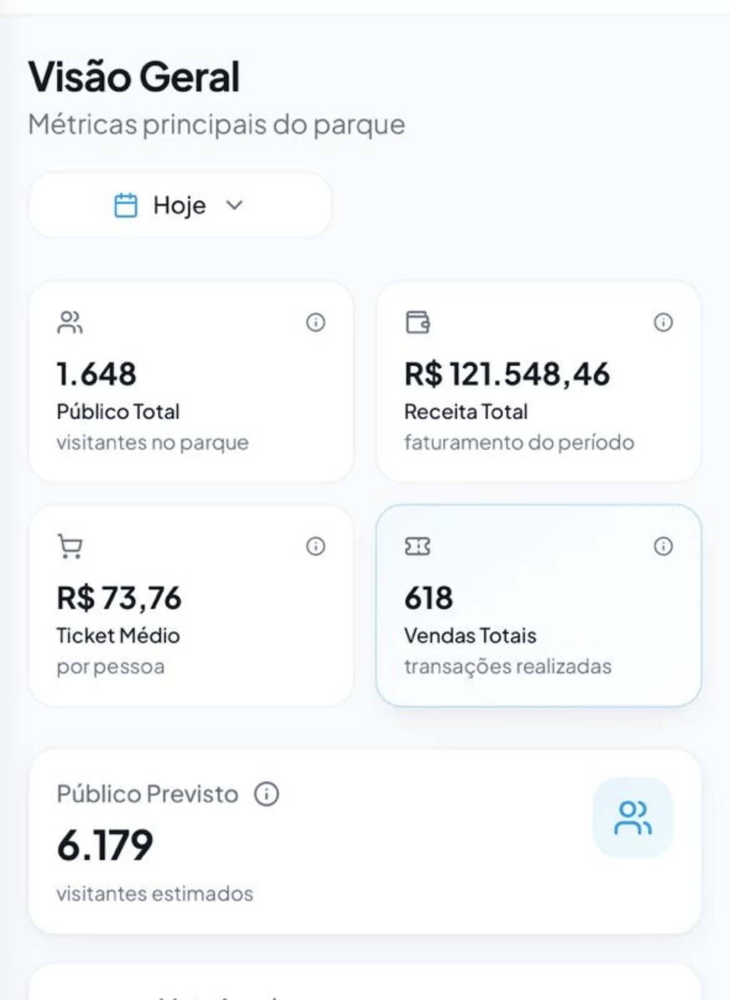
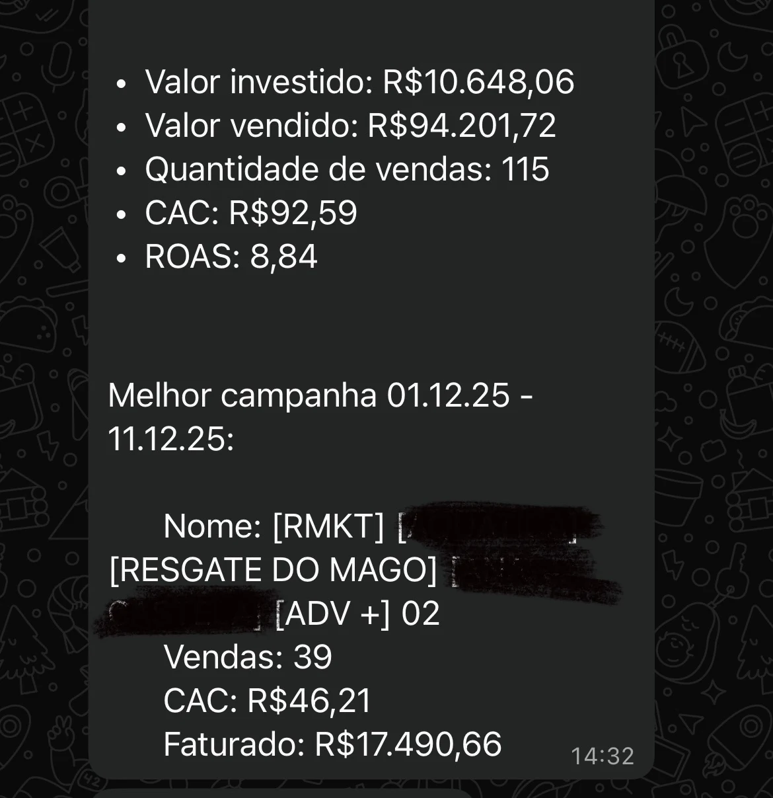
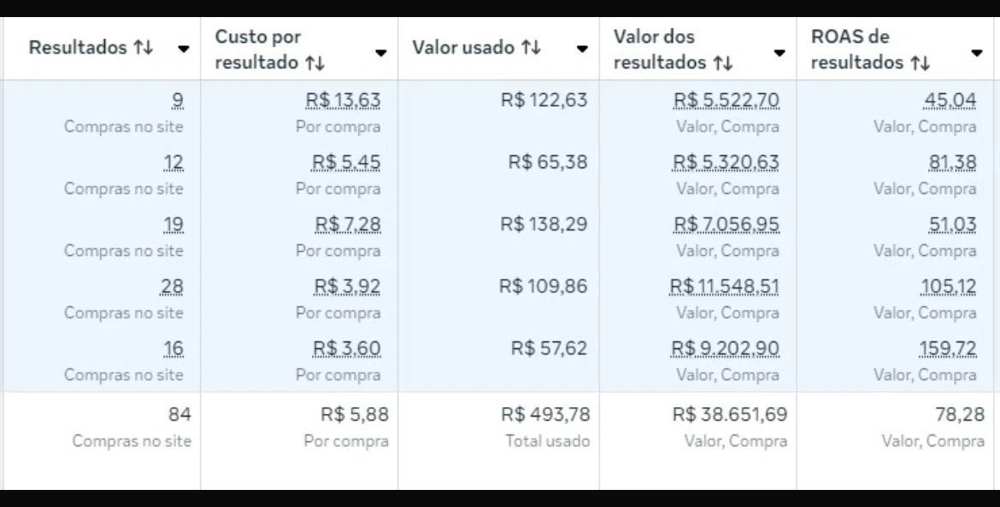
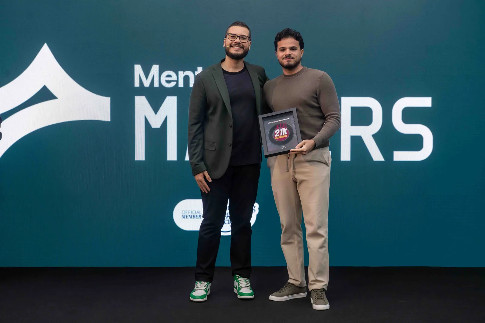

Na linguagem do marqueteiro:
Eu estruturo Funis de Vendas com Qualificação Inteligente + IA para empresários que vendem serviços, já investem em tráfego e precisam transformar melhor os leads que chegam em clientes.
Antes de qualquer coisa, deixa eu te explicar rapidinho o que eu faço.
Se você vende serviço, já investe em tráfego e recebe leads com frequência, provavelmente já passou por isso:
Só que, no final, uma boa parte não compra.
E aí você começa a acumular um monte de gente pedindo informação, orçamento e preço… mas poucas pessoas realmente virando clientes.
Enquanto isso, você ou alguém da sua equipe perde tempo tentando entender cada pessoa que chega.
É justamente aí que entra o meu trabalho.
Na linguagem do marqueteiro:
Eu estruturo Funis de Vendas com Qualificação Inteligente + IA para empresários que vendem serviços, já investem em tráfego e precisam transformar melhor os leads que chegam em clientes.
Traduzindo pro português:
Eu faço mais clientes chegarem no seu WhatsApp, já filtrados pra comprar seus serviços.
Meu trabalho é para empresários que vendem serviços e já têm o negócio rodando.
Normalmente, quem chega até mim:
Na prática, é aquele cenário clássico:
O problema é que você não está conseguindo qualificar direito quem chega.
Aí fica você, sua secretária, sua recepção ou seu vendedor perdendo tempo com gente que não vai fechar… enquanto os melhores leads acabam se misturando no meio da bagunça.
Pode ser você atendendo.
Pode ser uma secretária.
Pode ser recepção.
Pode ser vendedor.
Pode ser até você e sua esposa tocando isso juntos.
O ponto é:
já tem lead chegando no seu WhatsApp. já tem dinheiro sendo colocado em anúncio. mas você percebeu que está faltando qualificação pra vender mais.
É pra esse cenário que eu entro.
Se você:
meu trabalho não é pra você agora.
Eu não entro pra inventar demanda do zero.
Eu entro quando já existe movimento.
Só que você percebeu que está perdendo venda porque os leads chegam desqualificados ou mal atendidos.
É aí que faz sentido falar comigo.
Pra você confiar no que eu faço, aqui vão alguns projetos, números e bastidores de operações em que já atuei com estratégia, funil e aquisição.
em vendas brutas
ingressos vendidos em um único dia
em receita · 385 vendas
em receita · 618 vendas
R$94.201,72 vendidos
R$10.648,06 investidos
em campanhas com ROAS






1 / 3
Ao longo dos últimos anos, também participei do desenvolvimento de funis, estratégias e aquisição para experts e negócios relevantes no Brasil e na América Latina.
Nicho IA e Mini Apps
Nicho Empreendedorismo
Nicho Infoprodutos com IA
Nicho Educação financeira e digital
Nicho Moda masculina e estilo
Nicho Amazon e marketplaces
Nicho Negócios digitais e escala
Se você vende serviços, já investe em tráfego, já recebe leads no WhatsApp e percebeu que está perdendo venda por falta de qualificação, você pode falar comigo aqui.
Eu vou entender como seu processo funciona hoje e ver se faz sentido implementar uma estrutura de Qualificação Inteligente + IA no seu negócio.
⚠️ ATENÇÃO, NÃO CLIQUE NO LINK SE VOCÊ:
Se esse não é o seu caso e você já percebeu que o problema não é só gerar lead, mas qualificar melhor quem chega, então faz sentido conversar.
Conversa direta pelo WhatsApp.
Sim, se eu enxergar que faz sentido pro seu negócio, a implementação pode ser feita com você.
Não. O bot é só uma parte. O principal é a lógica de funil, qualificação e direcionamento dos leads.
Não. Pode ser você, secretária, recepção ou vendedor. O importante é já existir lead entrando e venda acontecendo pelo WhatsApp.
Não agora. Primeiro você precisa ter demanda entrando.